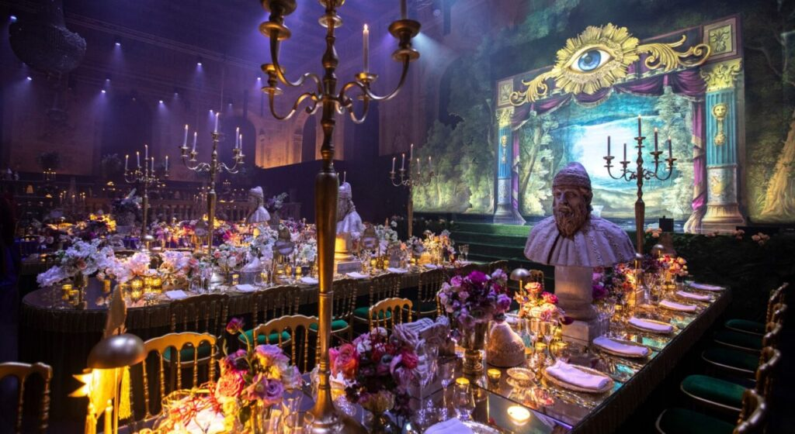

What is Venice Carnival?
The Venice Carnival (Carnevale di Venezia) is a world-famous festival held in Venice, Italy, renowned for its extravagant masks, elegant costumes, and grand celebrations. The festival's origins trace back to the 12th century, but it truly blossomed in the 18th century as a period of freedom where Venetians could escape societal restrictions. It was a time for music, dancing, and revelry before the austere period of Lent. Today, it draws visitors from all over the world who come to experience the magic of Venice during this iconic celebration.
Traditions of Venice Carnival
The Iconic Venetian Masks
Masks are the most famous symbol of the Venice Carnival. Originally, they were worn to enable people to partake in the festivities without revealing their identity, creating a sense of equality between the social classes. The masks, crafted from various materials like leather, porcelain, and glass, are often ornately decorated with gold, feathers, and intricate designs. Traditional masks such as the Colombina (a half mask), the Bauta (a full face mask with a cloak), and the Volto (a white mask with a pointed chin) continue to be featured during the festival. Wearing a mask allows attendees to embrace anonymity and live out fantasies, adding an air of mystery to the Carnival experience.

Grand Masquerade Balls
The highlight of the Venice Carnival is the extravagant masquerade balls, which take place in the opulent palaces, grand hotels, and historic venues throughout Venice. Guests donning luxurious, period-specific costumes and masks waltz to classical music and enjoy fine dining in candlelit rooms. Some of the most famous masquerade balls include the Ballo del Doge, renowned for its magnificent setting and haute couture costumes, and the Gran Ballo della Cavalchina, an elegant celebration inspired by the 18th century. These events attract high-profile guests and offer an immersive glimpse into the city's rich cultural history. A sense of mystique and timeless elegance surrounds these gatherings, where attendees are encouraged to adopt different identities for the evening.
Parades and Street Performances
The streets and squares of Venice come alive with parades, acrobats, musicians, and theatrical performances that transform the city into a magical stage. These performances often take place along the canals, where visitors can watch street entertainers, dancers, and musicians showcase their talents in front of the majestic backdrop of Venetian architecture. One of the most famous events is the "Flight of the Angel", where a performer dressed as an angel descends from St. Mark’s Bell Tower to the Piazza San Marco. This aerial spectacle marks the official opening of the Carnival, filling the air with excitement and wonder.
The Historical Significance of Venice Carnival
Beyond its present-day festivity, the Venice Carnival holds deep historical significance. In the 18th century, the Carnival was a time when people from all walks of life could mingle and interact freely, breaking down societal barriers. This sense of liberation and anonymity was important in a society with strict class divisions. During this period, Venice was a cultural and artistic hub, and the Carnival became a time to celebrate Venetian traditions, art, music, and theater. The masked balls, the music, and the performances reflect the city's rich artistic legacy, which continues to be an integral part of the Carnival's charm. As time went on, the Carnival faded, but it was revived in the 1970s, and now it is recognized as an important cultural festival, attracting millions of visitors every year.
Cultural Influences and Modern-Day Celebrations
The Venice Carnival draws inspiration from both Italian and global traditions. While the masks and costumes are central to the celebration, they are also influenced by other European masquerade balls and festivals. The event has evolved into an international affair, with visitors from around the world coming to Venice to take part in the festivities. Today, the Carnival is a blend of the old and new, with traditional masquerades and events alongside modern performances, fashion shows, and musical acts. The festival provides a unique opportunity to experience Venice's rich heritage while celebrating the joy and creativity of Carnival.
Venetian Cuisine During Carnival
During the Carnival, the streets of Venice are filled with the delicious aromas of traditional Venetian treats. A popular sweet served during the festival is frittelle, a deep-fried pastry filled with cream or fruit and dusted with powdered sugar. Another treat, chiacchiere (also known as “crostoli”), are thin, crunchy pastries that are lightly fried and sprinkled with sugar. These sweet offerings are commonly enjoyed by revelers during their celebrations. In addition to sweets, Venice offers savory options such as risotto with seafood and cicchetti (small tapas-style dishes), which are perfect for sharing during the festive period.
Experience the Magic of Venice Carnival
The Venice Carnival remains one of the most enchanting and picturesque festivals in the world. The city, with its winding canals, ancient architecture, and romantic atmosphere, provides the perfect backdrop for this magical celebration. Whether you’re watching a parade from the Grand Canal, dancing in an opulent ballroom, or simply strolling through the streets adorned with masks and costumes, the Venice Carnival offers an unforgettable experience that combines history, art, and joyous celebration.

Unveil the Mystique of Venice Carnival
Explore the history and grandeur of Venice Carnival through these videos and helpful links: